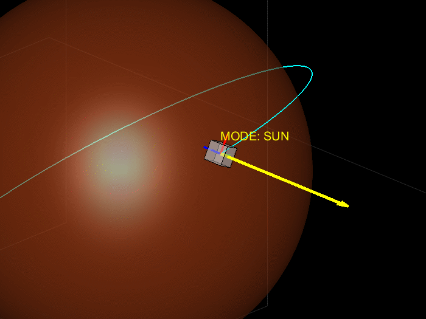

Aerospace Engineer specializing in Guidance, Navigation & Control, Spacecraft Dynamics, Embedded Systems, Simulation and Verification.
Three-axis reaction-wheel-based balancing platform. The video demonstrates the physical system balancing on an edge.

Simulation of a spacecraft Attitude Control System operating in Low Mars Orbit using Modified Rodrigues Parameters or quaternions, nonlinear rigid-body dynamics, PD tracking control, and autonomous mode switching.